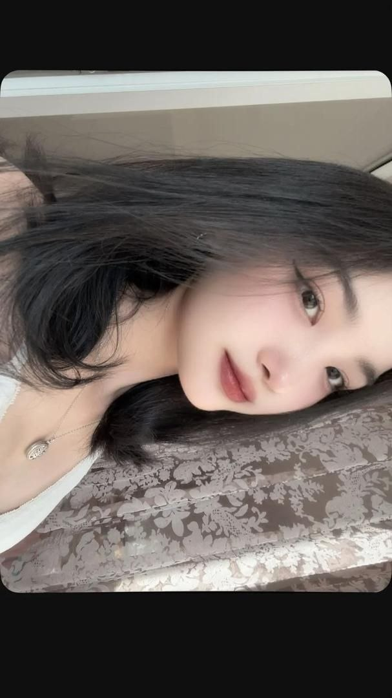
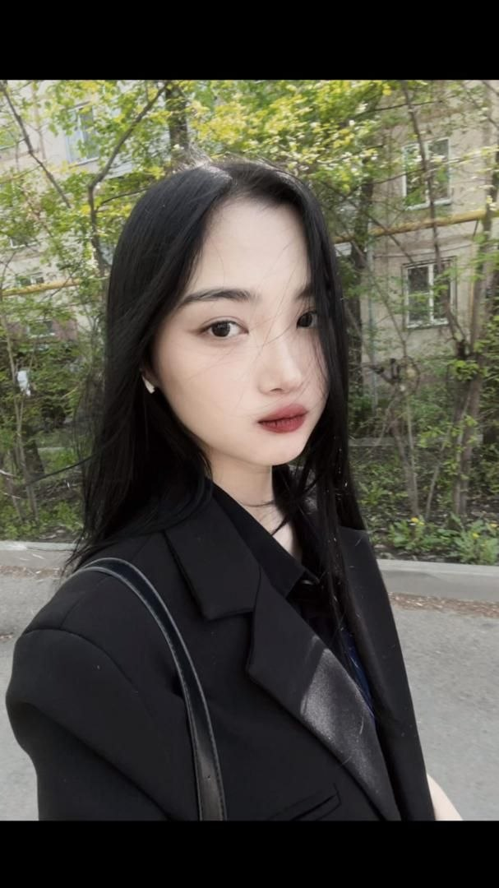
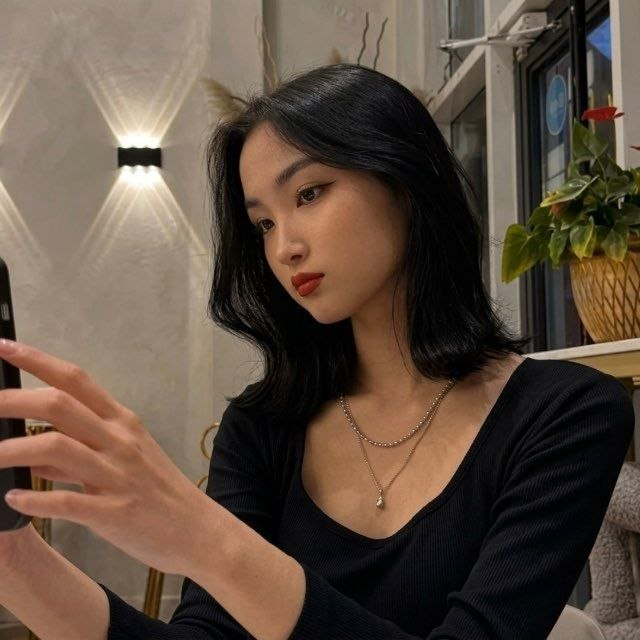

Мы были незнакомцами
Два человека в разных местах, каждый со своей жизнью. Я ещё не знал, что однажды буду ждать именно твоего имени на экране.
ГЛАВА ПЕРВАЯ • НАША ОРБИТА
Мы ещё ни разу не стояли рядом. Но за три года между двумя экранами появилось что-то удивительно настоящее.

Два человека в разных местах, каждый со своей жизнью. Я ещё не знал, что однажды буду ждать именно твоего имени на экране.

Одна фраза стала второй, потом разговором, потом привычкой. И расстояние вдруг перестало быть главным.

Были промежутки тишины, разные дни и разные дороги. Но каждый новый разговор звучал так, будто важная нить между нами никуда не исчезала.

Мы ещё не встретились вживую. Поэтому моя любимая глава пока не написана: день, когда расстояние впервые станет нулём.
МОЙ ЛЮБИМЫЙ КАДР
Но больше всего я люблю не фотографии. Я люблю человека по эту сторону каждого кадра.

Дальше — самое важное
Почему именно ты?→